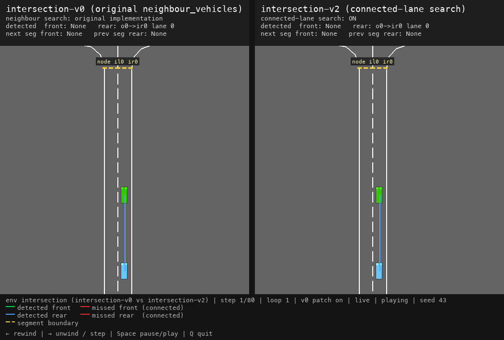
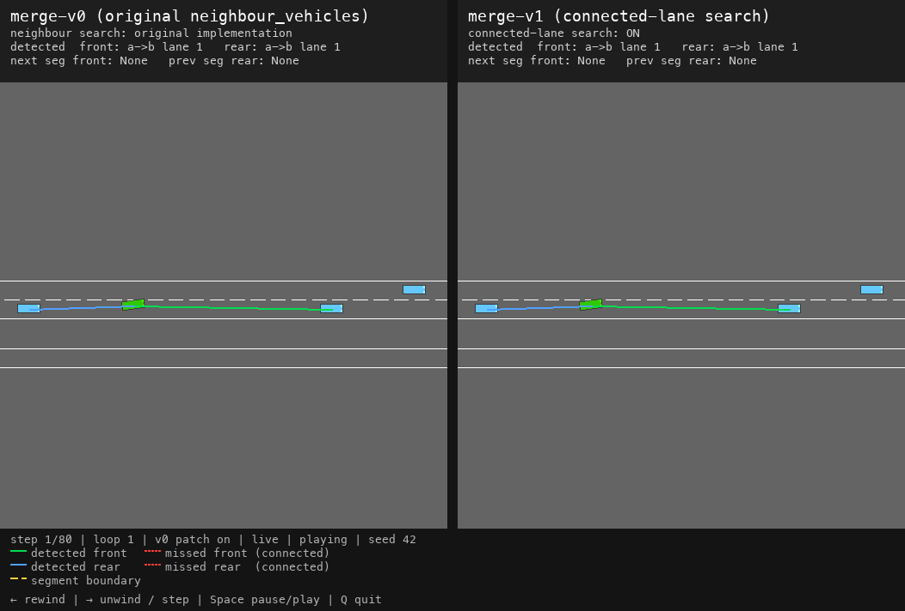

Neighbour vehicles¶
The neighbour_vehicles() method finds the preceding and following
vehicles of a given vehicle on a lane. It is used throughout the library — notably by
IDMVehicle for MOBIL lane-change decisions.
Its accuracy directly affects simulation behaviour in multi-segment environments.
Problem¶
Before version 1.12, neighbour_vehicles() only searched the current lane segment. Vehicles that
are not in the current segment were treated as invisible, even when they were directly ahead of or
behind the ego vehicle in the driving direction.
This caused incorrect behaviour near segment boundaries in environments built from several connected
lanes, such as merge, exit, roundabout, racetrack, intersection, and u-turn maps. See
issue #626.
{kind=link}

Side-by-side comparison of intersection-v0 (left) and intersection-v2 (right).¶
The fix¶
When neighbour_vehicles_connected_lanes is enabled, the search
extends to downstream and upstream connected lane segments via the road-network graph.
The behaviour is controlled by:
the
neighbour_vehicles_connected_lanesflag onRoad, andthe matching
neighbour_vehicles_connected_lanesentry in the environment config (seedefault_config()).
Reproducibility and environment versions¶
To preserve reproducibility, existing *-v0 environment IDs keep the original same-segment neighbour
search by default (neighbour_vehicles_connected_lanes=False).
New registered versions enable connected-lane search by default through
ConnectedLaneNeighboursMixin. For any environment, the
new behaviour can also be enabled explicitly (albeit not recommended):
env = gym.make("merge-v0", config={..., "neighbour_vehicles_connected_lanes": True})
Version mapping¶
Environment |
Initial (legacy search) |
Connected-lane search |
|---|---|---|
exit |
|
|
merge |
|
|
roundabout |
|
|
racetrack |
|
|
u-turn |
|
|
intersection |
|
|
Note
intersection-v1 and intersection-multi-agent-v1 are unrelated to this change: they provide a
continuous-action variant and a multi-agent wrapper respectively, not connected-lane neighbour search.
Demonstration¶
The animation below compares merge-v0 (left, original same-segment search) with merge-v1 (right,
connected-lane search) running the same seed and actions side by side. When the ego vehicle passes
a segment boundary, merge-v1 can detect a rear vehicle that is in the previous segment,
while merge-v0 cannot. Also notice that vehicle behaviour is different even with the same seed.
{kind=link}

Side-by-side comparison of merge-v0 (left) and merge-v1 (right).¶
Overlay legend¶
Overlay |
Meaning |
|---|---|
Green line |
Front neighbour returned by |
Red line |
Vehicle that was not detected pre-1.12 |
Blue line |
Rear neighbour returned by |
Yellow line |
Lane segment boundary (road-network node) |
Visual comparison¶
A pygame program has been created to demonstrate the difference:
scripts/validate/compare_neighbour_detection.py
python scripts/validate/compare_neighbour_detection.py
python scripts/validate/compare_neighbour_detection.py --env merge
python scripts/validate/compare_neighbour_detection.py --env intersection
python scripts/validate/compare_neighbour_detection.py --env racetrack-large --no-patch
python scripts/validate/compare_neighbour_detection.py --validate
python scripts/validate/compare_neighbour_detection.py --fixed-seed --steps 80
Flag |
Description |
|---|---|
|
Environment to compare (default: |
|
Do not patch the left panel with the pre-1.12 implementation |
|
Compare current legacy env against patched legacy env with pre-1.12 code |
|
Keep the same seed across loops |
|
Number of simulation steps per loop before resetting (default: 80) |
Keyboard controls: ← rewind, → unwind / step forward, Space pause / play, Q quit.